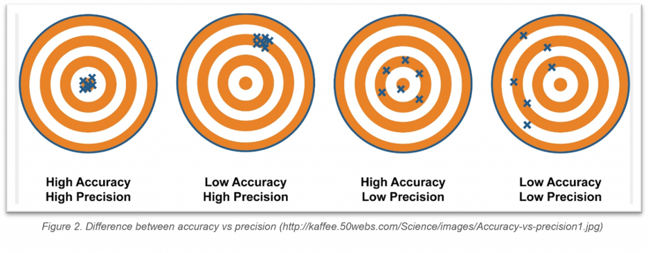
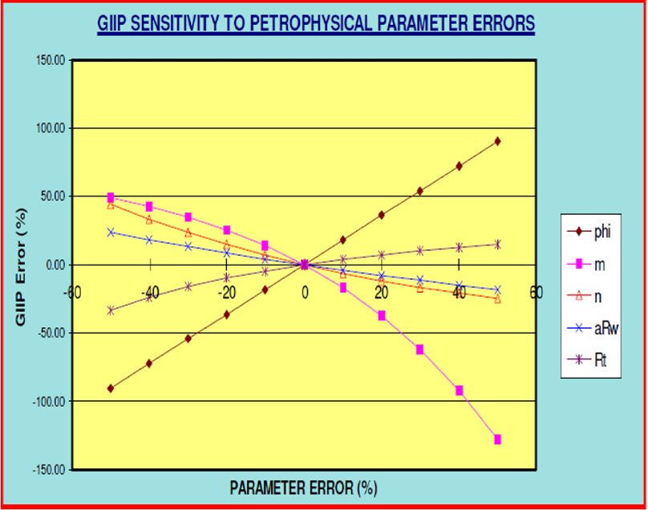

Introduction
Let’s imagine a condition where we are hunting a bear or any animal at the forest, we have been waiting and preparing so long just to wait the right moment to fire our gun or our crossbow (Figure 1). However, we forgot to calculate the wind effect so that we missed our target and we went back home bringing nothing but sad feelings.
The same thing can also happen to petrophysicist, after performing “fancy” petrophysical analysis which took a long time to be finished and lots of papers to be read, in the end the result was not as good as we hoped for or maybe we did not get any result at all (no flow)
after performing ‘fancy’ petrophysical analysis which taking so long time to be finished and hundreds of papers to be read, in the end the result is not as good as we hoped for or maybe we do not get any result at all (no flow).
In this edition, we will give you a brief overview about the uncertainty and how it relates to petrophysics.
Random (Statistical) Vs Systematic Errors
All of us know what is error? However, do we know that there are two types of error? They are random (or statistical) and systematic errors. These two terms also apply in Petrophysics realm.
in Petrophysics, random error (uncertainty) is usually defined as error caused by measurement or how the data was acquired. This type of error is usually called as noise or statistical error and can be reduced by increasing the number of measurement or data gathered. Whereas systematic error is defined as error caused by shifting, intentional “wrong-doing”, poor calibration, wrong model used, and every action that leads to different result from what it should be. This type of error cannot be reduced by averaging process or data gathering.
the systematic uncertainty can appear due to wrong environmental correction, varying well-bore condition, tool limitation, etc. Whereas in core data, it can appear due to measurement errors, volume of data (too little data for calibration), etc.
In addition, the other type of uncertainty is geological uncertainty. However, it is hard to define this particular uncertainty as it is very difficult to be distinguished from random and systematical uncertainties.
the combination of both random and systematic errors is what then define the total error or uncertainty in Petrophysics Realm.
In log data, the systematic uncertainty can appear due to wrong environmental correction, varying well-bore condition, tool limitation, etc. Whereas in core data, it can appear due to measurement errors, volume of data (too little data for calibration), etc.
In opposite to systematic error which mostly has big impact on the result, statistical error may or may not have big impact on the result. For instance, as we have larger volume of input data to be averaged over a reservoir zone, the less uncertainty that we will have in our log input (Fylling 2002). However, in multiple wells with limited data availability, incorrect zonal average of petrophysical properties can cause significant difference with the value it should be.
Putting aside the geological uncertainty for simplicity, therefore the combination of both random and systematic errors is what then define the total error or uncertainty in Petrophysics Realm.
Accuracy Vs Precision
In data analysis, we often hear about accuracy and precision (Figure 2). What is the difference between these two terms? As Petrophysicist, it is good to know the difference of these terms so that we can understand and explain it whenever somebody asks us about what we did.
Accuracy is used to describe the difference between the measured and true value of a parameter. This accuracy is usually affected by systematic error. Precision is used to describe the distribution of a data around the average measured value. This is usually affected by random error.

Sensitivity Analysis
Sensitivity analysis is a process that allows us to evaluate the effect of uncertainties in our input parameters to certain result. In Petrophysics case, the method can be read further in a paper published by (Owens 1990). The example of this analysis can be seen in estimation of uncertainty based on Archie equation calculation of Sw for a North Sea Rotliegendes Gas Field, which the results are expressed in terms of % of Gas Initial in Place (GIIP), see below.

From Figure 3 we can see that porosity (Ф) and m have larger effects to the change of GIIP compared to other parameters, thus the uncertainty. Hence, what the petrophysicist should do is focusing their effort of reducing uncertainty on these two parameters.
Monte-Carlo Analysis
In recent years, the development of computer has provided an opportunity for Monte-Carlo Analysis to be performed in petrophysical analysis. Compared to the analytical method which time consuming to be performed, Monte-Carlo is assumed to be more straightforward.
The basic of Monte-Carlo is that it uses random numbers and probability descriptors for input variable to investigate problems expressed as mathematical formulae. The example of how this Monte-Carlo was performed in a real case, in a same unit reservoir with different fluid bearing scenario can be seen in paper published (Adams 2005).
Knowing Your Uncertainty
Most people will probably think that: "Why should I concern about this? It just slows down my working progress".
Do not underestimate the importance of adding uncertainty consideration in your final report, because knowing uncertainty is essential part of being petrophysicist as it will help us to:
Understand the size of uncertainty of our data and result.
Understand the sources of uncertainty and putting the order of importance to be addressed.
Design the best method or practice of data gathering to eliminate and addressing the greatest source of uncertainty.
Give estimation of uncertainty of volumetric calculations.
Predict the volumetric probability (P10, P50, P90)